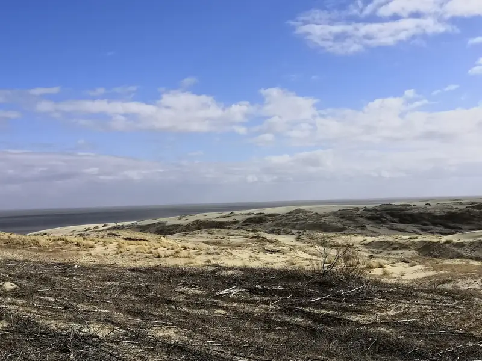
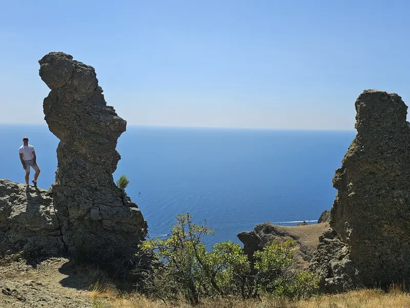
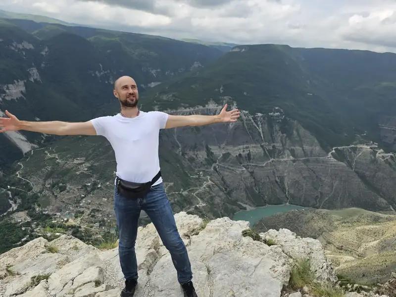
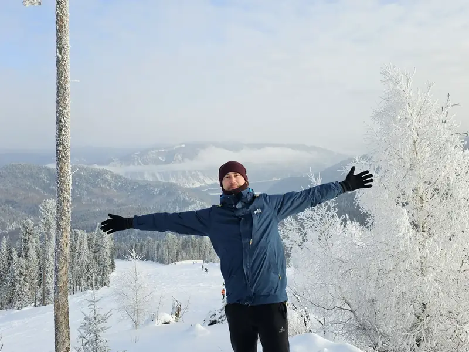
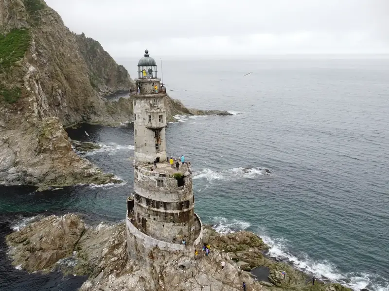
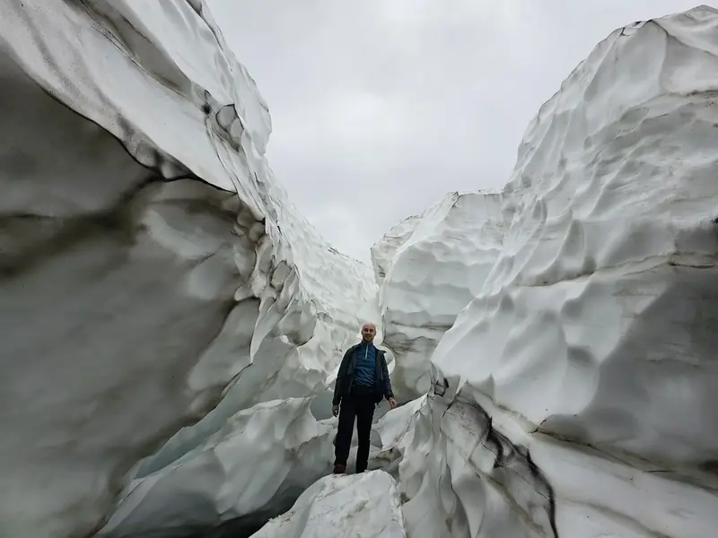

Сергей Веретенников · отчёты о поездках
Россия: регион за регионом
Цель простая: побывать в каждом регионе страны хотя бы раз. Минимум — столица региона, дальше как получится.
Нажмите на регион на карте или выберите его из списка ниже, чтобы открыть отчёт.
83 из 89 регионов
- В пути
- с февраля 2022
- Последний новый регион
- 7 августа 2025 · Магаданская область
- Впереди
- 6 регионов
Наведите на регион или нажмите на него.Нажмите на регион — появится ссылка на отчёт.
Все поездки
Ничего не нашлось.
Любимые

39Калининградская областьОбласть, где у каждого города два имени. Пять дней, и в памяти больше зверей, чем памятников: лебеди, коты, бегемоты, кролики и один Кант.Открыть отчёт →
91Республика КрымПоездка, которую я не планировал, а выиграл. Программу составили за меня, от себя я добавил только подъём в шесть утра.Открыть отчёт →
5Республика ДагестанЗдесь всё не по правилам, а по договорённости: дорога, небо над барханом, пляж с запретом на купание. Два дня: каньон, катер, песок и Каспий.Открыть отчёт →
4Республика АлтайТри дня у Золотого озера, которое в январе не золотое и не синее. С горы оно выглядит как облако в долине, из окна — как белое поле.Открыть отчёт →
65Сахалинская областьОстров, на который летят ради другой скалы в море. Два часа автобусом, два часа лодкой, и на маяке тебя встречают не смотрители, а чайки с птенцами.Открыть отчёт →
41Камчатский крайТретья поездка на Камчатку. К вулканам ехал целый день и нашёл там туман, а извержение показали бесплатно и без очереди, в иллюминаторе по дороге сюда.Открыть отчёт →
ЦФО · Центральный федеральный округ
- 33Владимир · март 2022Город, где всё можно сделать руками: гвоздь, ложку, стеклянного петуха. Цены при этом московские.
- 36Воронеж · февраль 2022Город, в котором корабль Петра стоит во льду, пушки в снегу, а как назвать жительницу города, не знает никто.
- 37Иваново · март 2022Город, которому досталось два часа вечером и полчаса утром. Снег, закат, купола с дрона и памятники тому, чем Иваново живёт: прялке, собаке и шансону.
- 40Калуга · июнь 2023Город, который откладывал до последнего. Пустые улицы в шесть утра, ракета над рекой, три часа в музее и ливень, который всё закончил за меня.
- 44Кострома · март 2022Ювелирная столица страны, в которой нет ни золота, ни серебра. Зато в марте есть солнце, снег и купола, и всё это блестит бесплатно.
- 46Курск · февраль 2022Город торговых центров, как мне подсказали. Проверил: самое большое впечатление дня действительно под куполом с аттракционами, а дрон в черте города всё время теряет связь.
- 48Липецк · февраль 2022Город металлургов, и это видно по скульптурам: собачки, гитарист на коне и удав с мартышкой здесь из металла. Один февральский день, поезд туда, автобус с неожиданным репертуаром обратно.
- 50Подольск · август 2024 · парк «Патриот»Регион вокруг Москвы. Один день: рабочий у стелы, церковь в белокаменной резьбе, вечерний город и электричка в 22:01.
- 57Орёл · июнь 2023Город, про который я не знал ничего. Ночью в нём спят даже киоски, днём стоят писатели, а самое неожиданное — полторы тысячи кукол за городом.
- 62Рязань · май 2022Город, где грибы с глазами, десант в музее, а дождь идёт по расписанию. Дрон так и не взлетел.
- 67Смоленск · сентябрь 2023Город, в котором гуляешь не вокруг кремля, а внутри него. Один день, 38 башен по табличке и стена, которая не кончается.
- 68Тамбов · сентябрь 2023Город, где я не поверил списку достопримечательностей. Волк, храмы, которые ни с чем не спутаешь, и дворец, которого здесь быть не должно.
- 69Тверь · февраль 2022Тверские — козлы. Это не ругань, а музейная табличка. Город, который спокойно живёт со своим прозвищем, своим вокзалом и казармами 1858 года.
- 71Тула · июнь 2023Тула без пряника, самовара и Ясной Поляны. Один день пешком: ружья, Демидовы, Кремль на реставрации и завод, который светится.
- 76Ярославль · апрель 2022Город с тысячной купюры, снятый с высоты. Один апрельский день, два города на Волге и дрон, на котором я учился летать.
- 77Москва ❤город федерального значения · дом · Центр и вода · События · «Россия» на ВДНХ и Новый годАрка, японский сад, стеклянный пол на высоте и деревянный кремль. Два выходных в своём городе.


СЗФО · Северо-Западный федеральный округ
- 10Петрозаводск · март 2022Карелия в два захода. В марте Онего было полем до горизонта с вмёрзшими баржами, в июле мраморный каньон был полон воды и людей на тросах. Между ними шестнадцать месяцев и тур, который ехал быстрее меня раза в два-три.
- 11Сыктывкар · сентябрь 2023Город, который я обошёл пешком целиком: от поезда до трапа самолёта. По дороге анбур, пять чашек кофе и кедровое молочко.
- 29Архангельск · июнь 2023«Счастье не за морями» написано на песке у Двины. Я всё равно съездил к морю: проверить. Один день, три музея, два дождя и одно Белое море.
- 35Вологда · июнь 2023Город, где все друг другу машут. Больше пятидесяти регионов за спиной, и первый, где моими фотографиями заинтересовался человек с удостоверением.
- 39Калининград · апрель 2022Область, где у каждого города два имени. Пять дней, и в памяти больше зверей, чем памятников: лебеди, коты, бегемоты, кролики и один Кант.
- 47Гатчина · июнь 2023Область, у которой долго не было одной столицы. Поэтому и поездок две: зимний Выборг с сосульками и летняя Гатчина, где меня чуть не сбили на пустом переходе.
- 51Мурманск · март 2022Город, где в марте ещё Новый год, музей работает на атомной тяге, а главный памятник поставили коту.
- 53Великий Новгород · апрель 2022Тысяча лет за четыре часа. Кремль в лесах, ледоход на Волхове, монастырь на закате и дрон, который всё это видел лучше меня.
- 60Псков · апрель 2022«Россия начинается здесь». На Камчатке та же фраза, только слова в другом порядке: там география, тут история. Один апрельский день, один кремль, который оказался лучшим из всех.
- 78город федерального значения · июнь 2023 · месяц в ПитереДва дня по списку. В Петербурге я бывал не раз, но всегда по чужому плану; на этот раз список был мой, и он закрылся. Почти.
- 83Нарьян-Мар · сентябрь 2023Самый малолюдный регион страны, куда я попал на два дня из-за дешёвого билета в Уфу. Город красит дома, рисует оленей и живёт на EDGE.


ЮФО · Южный федеральный округ
- 1Майкоп · июнь 2022Регион внутри региона. Один день, полтора километра вверх, кабаны, пещера и обрыв с качелями.
- 8Элиста · июнь 2022Три дня в степи, где деревья растут только в посёлках. Всё, что здесь стоит, стоит одно: тополь, храм, полюс жары.
- 23Краснодар · июнь 2022Две поездки в один город. Парк у стадиона, в который хотелось вернуться вечером, и японский сад с красной пагодой и карпами кои.
- 30Астрахань · март 2022Юг, где грачи гуляют уже 6 марта, а погода за три часа успевает побыть всеми четырьмя временами года.
- 34Волгоград · март 2022Город длиной 90 километров, где главная достопримечательность — память. Первый город-герой на моём пути и первый, где дрон так и не взлетел.
- 61Ростов-на-Дону · июнь 2023Предпоследний миллионник в списке. Приехал к носорогам, остальной город прилагался.
- 91Симферополь · август 2024Поездка, которую я не планировал, а выиграл. Программу составили за меня, от себя я добавил только подъём в шесть утра.
- 92город федерального значения · август 2024Город, где за одно утро можно сходить в две с половиной тысячи лет назад и в музей, которому восемнадцать дней. Между ними полкилометра и горсть инжира.


СКФО · Северо-Кавказский федеральный округ
- 5Махачкала · июнь 2023Здесь всё не по правилам, а по договорённости: дорога, небо над барханом, пляж с запретом на купание. Два дня: каньон, катер, песок и Каспий.
- 6Магас · июнь 2023Регион, где я пропустил столицу и не поднял дрон. Горы, водопад и башни на скалах, всё с земли, и этого хватило.
- 7Нальчик · июнь 2023Гид рассказывал столько, что я ничего не запомнил, а в музее не нашлось экспоната, о котором рассказывали. Поэтому здесь только то, что я видел сам: зелёное озеро, снег на 3500 в июне и Нальчик пешком.
- 9Черкесск · июнь 2023Первый город кавказской поездки. Стереотипы подтвердились за полчаса, а дальше начались сюрпризы: свадебные машины в коврах, дрон внутри мечети и телескоп, к которому надо было записаться заранее.
- 15Владикавказ · июнь 2023Город, где меня понимали со второго раза, а гимн пели с первого. Один день во Владикавказе, который оказался Днём России.
- 20Грозный · код 95 · июнь 2023Город, построенный заново и по правилам. Одну сторону со смотровой снимать нельзя, зато бариста сбегает за энергетиком в соседний подъезд.
- 26Ставрополь · июнь 2022Край, куда ездят лечиться. Я приезжал дважды: сначала автобусом с компанией в Град Креста, через год один в Пятигорск, и только во второй раз залез в минеральную воду.
ПФО · Приволжский федеральный округ
- 2Уфа · сентябрь 2023Последний миллионник, в который пришлось ехать специально. Два дня пешком, один ливень, спектакль по-башкирски в наушниках и клещ Валера Второй.
- 12Йошкар-Ола · сентябрь 2023Город, который построил себе Европу из кирпича: Брюгге, Монако и башни Московского кремля на одной реке. В регион 12 я приехал 12 числа.
- 13Саранск · сентябрь 2023Тринадцатый регион тринадцатого числа. Город, который построили к одному чемпионату, и скульптор, ради которого стоило ехать.
- 16Казань · май 2022Город, про который все говорили «вау». Я искал это «вау» с двух дня до полуночи и нашёл не в кремле, а в недостроенном храме на окраине и на ночной набережной.
- 18Ижевск · апрель 2022Город, где я был много раз, и место, которое нашёл только теперь. Очередь в тир, музей завода, плотина с дрона и деревня, куда не едут таксисты.
- 21Чебоксары · сентябрь 2023Чебоксары — не Монако. Небогатый, но душевный город, где всё подписано: Шупашкар, 1469, 021. А в конце дня — трактор, на который можно залезть.
- 43Киров · август 2022Город, где игрушки — дело серьёзное. Их лепят четыреста лет, принимают в лом, расставляют по улицам и прячут за дверью с надписью «Не преклоняться».
- 52Нижний Новгород · август 2022Столица закатов. Один день с утра до ночи, снизу вверх: от стрелки Оки и Волги к стенам кремля и к тому самому закату.
- 56Оренбург · май 2022Родина. Вечер над Родиной, где прошло детство, день в Оренбурге с дроном и купе СВ без попутчика.
- 58Пенза · май 2022Город, который лучше всего виден сверху. День в Пензе, девять утренних кадров с земли и первый полёт дрона дальше километра.
- 59Пермь · апрель 2022Город, где всё превращается в музей: кафе, квартира из сериала, кладбище кораблей. Билет не нужен, нужно правильно произносить название.
- 63Самара · май 2022Днём шёл по списку: особняки, памятники, кирха, костёл. Вечером местные сказали слово «Вертолётка», и список закончился. Домой вернулся в час ночи.
- 64Саратов · март 2022Серый март на Волге. Город, где всё яркое приходится искать: купола, бронзовых жителей на снегу и золотого фазана в оранжерее.
- 73Ульяновск · май 2022Родина Ленина, в которой я к Ленину не попал. Зато попал к Ту-144, дивану Обломова и букве ё.

УрФО · Уральский федеральный округ
- 45Курган · апрель 2022Город на триста тысяч, где выпрямляют ноги. Всё самое интересное — за городом, и до него нет остановок.
- 66Екатеринбург · апрель 2022Город контрастов в прямом смысле: стеклянный Ельцин Центр, деревянный дом рядом с небоскрёбом, клавиатура из бетона на берегу реки. Один день, шестнадцать часов на ногах.
- 72Тюмень · август 2023 · ТобольскГород без доминанты. Три дня в Тюмени, где всё ровно хорошо: набережная, скульптуры, отель с тематическими этажами и день рождения города.
- 74Челябинск · апрель 2022Я ждал серый мрачный город. Получил метеорит, верблюдов, трамвай с дверью купе и бильярд на вокзале. Серым оказался только воздух.
- 86Ханты-Мансийск · август 2023Регион, где всё крупнее обычного: стадо мамонтов на склоне, нефть в колбах, текст длиной в здание и писсуары для двухметровых. А на сам город у меня был один день.
- 89Салехард · август 2023Город, в который заезжают по пути. Тридцать шесть часов на Полярном круге между двумя рейсами, шаман по расписанию и мамонты на каждом углу.

СФО · Сибирский федеральный округ
- 4Горно-Алтайск · январь 2024Три дня у Золотого озера, которое в январе не золотое и не синее. С горы оно выглядит как облако в долине, из окна — как белое поле.
- 17Кызыл · июнь 2022Ехал без ножа и с плохой статистикой в голове. Уехал с тувинской песней, которую так и не выучил.
- 19Абакан · июнь 2022Крупнейшая ГЭС России, до которой нет прямого автобуса. Два автобуса, два с половиной километра пешком и банка черничного джема.
- 22Барнаул · январь 2024Барнаул достался мне в темноте и в снегопаде: в десять вечера, в полночь и в половине восьмого утра. Город, который я знаю в основном по подсветке.
- 24Красноярск · июнь 2022Город-миллионник, в котором я проспал день и не зарядил телефон. Спасли ночь, гид Андрей и скалы, которые открыли за пару дней до меня.
- 38Иркутск · июль 2022Сюда ссылали. Теперь сюда едут сами: за Байкалом, а потом выясняется, что и город того стоит.
- 42Кемерово · май 2022Угольная столица, в которой в шахту не пускают. Зато пускают во всё, что вокруг шахты: музей, экскаватор, бор и дрон над Томью.
- 54Новосибирск · апрель 2022Третий город страны, в котором местные кроме зоопарка ничего назвать не могут. Я нашёл ещё оперу, море и качели, но пришлось приехать дважды.
- 55Омск · апрель 2022Город, в котором всё почти есть. Вход в метро без метро, спуск к реке без лестницы, набережная, которую я искал весь день, и люди, из-за которых всё это прощаешь.
- 70Томск · май 2022Город из дерева, который за собой следит. Колонка с водой, острог на горке, Чехов босиком и тапочки на вокзале.


ДВФО · Дальневосточный федеральный округ
- 3Улан-Удэ · июль 2022Два дацана, русское подворье между ними и поезд в Читу вечером. Город, который я так и не посмотрел.
- 14Якутск · июль 2022 · МирныйДиковинный мир, но всё ещё Россия. Лёд под горой в июле, белые ночи, автобус без Яндекса и кит под потолком кафе.
- 25Владивосток · июль 2022Город, где суша всё время кончается. Вокзал упирается в порт, кампус в пролив, а к маяку идут по воде. Один день, одни ноги и один дрон.
- 27Хабаровск · июль 2022Город, который мне не понравился, и два дня, за которые он всё-таки успел показать паровозы, Амур с дрона и поле лотосов.
- 28Благовещенск · июль 2022Город на границе. Китай через реку, динозавры под ногами, и всё это за один день между самолётом и поездом.
- 41Петропавловск-Камчатский · август 2025Третья поездка на Камчатку. К вулканам ехал целый день и нашёл там туман, а извержение показали бесплатно и без очереди, в иллюминаторе по дороге сюда.
- 49Магадан · август 2025На Колыме едешь за одним, а показывают другое, и оно лучше. Я плыл к сивучам, а первым из тумана вышел большой противолодочный корабль.
- 65Южно-Сахалинск · июль 2022Остров, на который летят ради другой скалы в море. Два часа автобусом, два часа лодкой, и на маяке тебя встречают не смотрители, а чайки с птенцами.
- 75Чита · июль 2022Регион, о котором слышат только из криминальных сводок. Два дня в Чите: солнце, декабристы, дацан, буузы и ни одной сводки.
- 79Биробиджан · июль 2022Область еврейская, евреев один процент. Идиш на табличках есть, менора у вокзала есть, а синагогу пришлось искать.
- 87Анадырь · июль 2025Здесь всё через лиман. Из аэропорта в город плывут катером, к Берингову морю идут лодкой, а белухи приплывают к набережной сами.

Впереди · 6 регионов
- 31Белгородская областьБелгород
- 32Брянская областьБрянск
- 80Донецкая Народная Республика
- 81Луганская Народная Республика
- 84Херсонская область
- 85Запорожская область